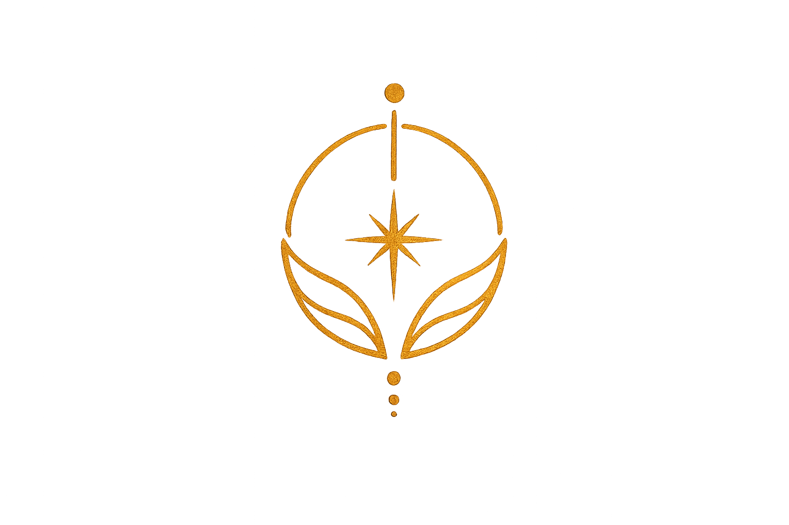
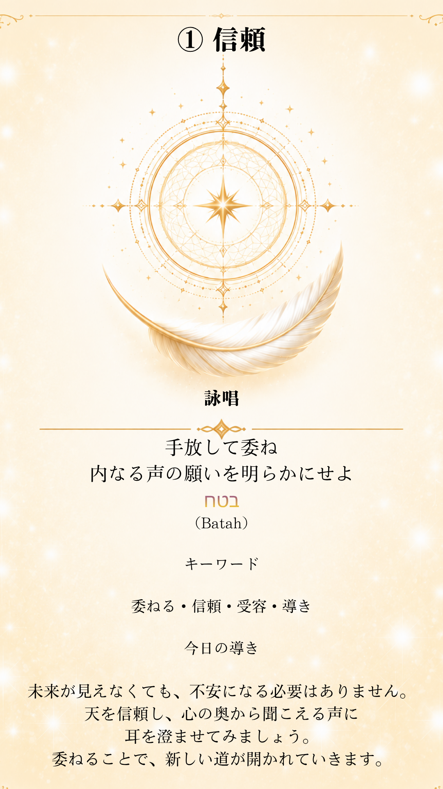

🌍 宇宙の心の天気予報
今日の宇宙全体の流れを、 世界共通の心の空模様としてお届けします。

光の詠唱は、正しい答えを探すための場所ではありません。
少しだけ立ち止まり、自分の心の声に耳を傾けるための、
小さな祈りの場所です。
「こうでなくてはならない」という決まりはありません。 どのコンテンツから始めても大丈夫です。 今日のあなたが惹かれる場所から、自由にお楽しみください。

表示されるカードは毎回変わります
心を静かにして、「今日の一枚」を押してください。 今のあなたに必要なカードが一枚選ばれます。
正しい受け取り方はありません。 最初に心へ浮かんだことを、大切にしてください。
心に抱えていることを自由に書き出し、 書き終えたら「天へ還す」を押してください。 誰かに見せるためではなく、 自分の心を少し軽くするための場所です。
入力した内容は送信・保存されません。 この画面上だけで処理され、「天へ還す」を押したあとに消去されます。
書いた内容を、サイトの作者やほかの人が読むことはありません。
心の天気予報には、二つの見方があります。 今日という一日を穏やかに過ごすための、 小さな指針としてお使いください。
今日の宇宙全体の流れを、 世界共通の心の空模様としてお届けします。
生まれた日の星と今日の宇宙を重ね、 あなた自身への響きを読み解きます。
宇宙全体の天気と、あなた個人の天気は、 異なる結果になることがあります。
覚えている夢の場面や、そのとき感じた気持ちを入力すると、 夢に表れた心の動きを読み解きます。 夢と響き合う「光の詠唱」のカードと、 今日の問いかけをお届けします。
夢は未来を決めるものではなく、 今の心を映す小さな鏡です。 夢の答えを一つに決めるものではなく、 自分の心と向き合うためのきっかけとしてお楽しみください。
現在はシンプルなキーワード判定を採用しています。 今後は、夢全体の流れや感情まで、 より詳しく読み解ける機能を追加する予定です。
光の詠唱は、正しい答えを見つけるための場所ではありません。
忙しい毎日の中で少しだけ立ち止まり、 自分の心の声に耳を傾けるための、 小さな祈りの場所です。
どのコンテンツから始めても大丈夫です。
今日のあなたが惹かれる場所から、
どうぞ自由にお楽しみください。
あなたの心が、光に包まれますように。